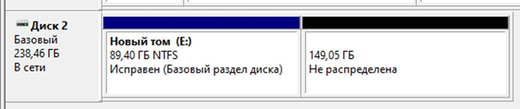

Достаточно часто в компьютере имеется всего лишь один жесткий диск. Однако не всегда пользоваться одним логическим устройством удобно. Возникает потребность в работе с двумя или более независимыми объектами для хранения данных. Независимые друг от друга части одного физического носителя называют разделами, а операцию деления диска на разделы – разметкой жесткого диска.
Есть несколько причин делить жесткий диск на разделы. В первую очередь они нужны для эффективного и безопасного хранения информационных ресурсов. Для установки двух и более операционных систем на один жесткий диск, его также придется поделить на разделы, так как операционная система Windows и другие операционные системы можно устанавливать только на разные разделы или жесткие диски.
Также создание нескольких разделов необходимо для корректной работы с GNU/Linux.
Разметку жесткого диска на разделы можно выполнять как с использованием системных средств той или иной ОС, так и с помощью системных утилит других производителей системного программного обеспечения.
Выбор файловой системы, как и оперативной системы, зависит от ее дальнейшего использования. Самыми популярными файловыми системами являются:
FAT12 – устаревший, ограничения по объему одного файла – 32 Мб;
FAT16 – устаревший, ограничения по объему одного файла – 2 Гб;
FAT32 – имеет совместимость с большинством систем, ограничения по объему одного файла – 4 Гб;
exFAT (также совместима со множеством систем, не имеет ограничений по объему);
NTFS – разработано Microsoft, некоторые системы не поддерживают, не имеет ограничений по объему;
APFS – разработано Apple, некоторые системы не поддерживают, не имеет ограничений по объему.
HFS+ – разработано Apple, некоторые системы не поддерживают, не имеет ограничений по объему.
Для разделения жесткого диска на разделы с помощью средств необходимо кликнуть правой кнопкой мыши на ярлык «Мой компьютер» и выбрать вкладку «Управление» в выпавшем контекстном меню.
В появившемся окне «Управление компьютером» следует выбрать пункт «Запоминающие устройства», далее – подпункт «Управление дисками».
В открывшемся окне будут отображаться все установленные на компьютере жесткие диски и их разделы.
Если переместить курсор мыши в область любого из дисков и правой кнопкой вызвать контекстно-зависимое меню, то можно получить список операций, применимых к выбранному диску.
Из представленного текста следует, что если на единственном диске достаточно свободного места, то его (свободное место) можно использовать для создания еще одного раздела на этом диске. При этом существует ряд ограничений, которые описаны в справке. Так, например, в справке сказано: «При сжатии раздела некоторые файлы (например, файл подкачки или область хранения теневых копий) не могут быть перемещены автоматически, ограничивая уменьшение раздела точкой, в которой находятся неперемещаемые файлы».
Допустим принято решение создать новый раздел. Необходимо выбрать пункт «Сжать том» и подтвердить выбор нажатием левой кнопки мыши.
Система определяет размер доступного места для сжатия, сообщив об этом пользователю, а затем выводит на экран окно с параметрами операции сжатия.
В поле «Доступное для сжатия пространство» отображается общее количество свободного места на диске в мегабайтах, которое можно использовать для создания нового раздела. В поле «Размер сжимаемого пространства», доступном для редактирования, необходимо указать, какой объем освобождаемого пространства на диске будет использован под новый раздел. Поля «Общий размер до сжатия» и «Общий размер после сжатия» показывают, сколько мегабайт на диске занимал исходный раздел до разметки, и сколько места он будет занимать после нее.
Требуется задать размер сжимаемого пространства и нажать кнопку «Сжать». Выполнится процесс деления диска на разделы, в результате которого на диске появится свободное нераспределенное пространство, которое в дальнейшем можно будет использовать для создания одного или нескольких новых разделов.

Теперь остается только создать нужные разделы, отформатировать их под ту или иную доступную файловую систему и присвоить новым разделам буквы, под которыми они будут отображаться в системе, в частности, в окне «Мой компьютер».
На рисунках представлены действия, позволяющие создать на неразмеченном пространстве новый раздел с файловой системой NTFS. Созданному разделу будет присвоено системное имя F: и метка тома «файлохранилище».
На рисунке представлен фрагмент окна «Мой компьютер», иллюстрирующий наличие в системе нового раздела.
Дополнительные средства
В отличии от системных средств разметки дисков, обладающих рядом ограничений (размер раздела, доступные файловые системы, ограниченный перечень операций с разделами), специализированное системное программное обеспечение предоставляет пользователю более широкие возможности по обслуживанию дисковой подсистемы. Среди наиболее распространенных на российском рынке программных продуктов можно выделить два: Acronis Disk Director компании Acronis и Paragon Partition Manager компании Paragon Software Group.
Задание
Задание заключается в том, чтобы:
- создать новую виртуальную машину с двумя виртуальным жесткими дисками размером 20Гб;
- используя внесистемное программное обеспечение компаний Acronis и Paragon, выполнить разметку первого диска средствами утилиты Acronis Disk Director, разметку второго диска – средствами утилиты Paragon Partition Manager;
- оба диска разметить на 3 раздела: 2 основных (6Гб и 4Гб) и 1 дополнительный раздел (10Гб). В пределах дополнительного раздела создать 2 логических диска (7Гб и 3Гб). Основной раздел размером 6Гб должен получить метку «Основной», логический диск размеров 3Гб получает метку «Архив». Оба основных раздела и логический диск размером 7Гб форматируются под файловую систему NTFS. Второй логический диск форматируется под файловую систему FAT32.;
- на основании материалов раздела 5.1 настоящих методических указаний, материалов сайтов компаний производителей системного программного обеспечения подготовить иллюстрированные описания процессов разметки дисков.